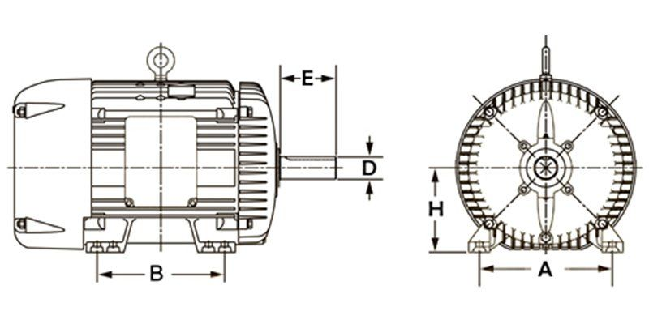
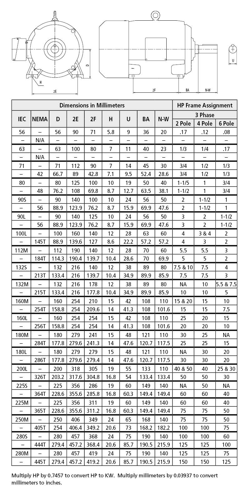
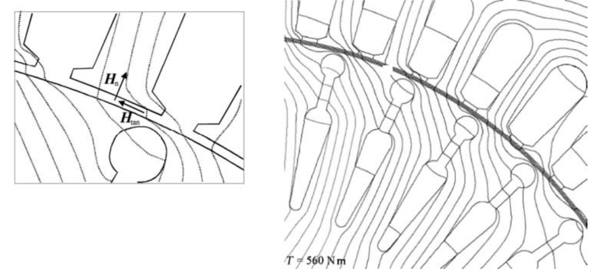
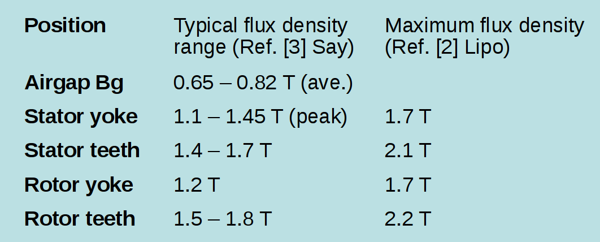
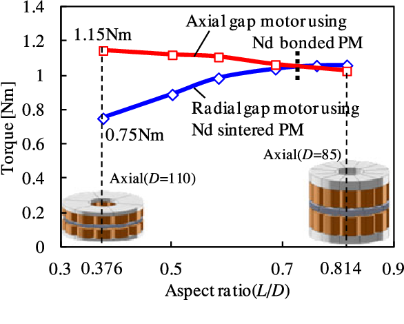
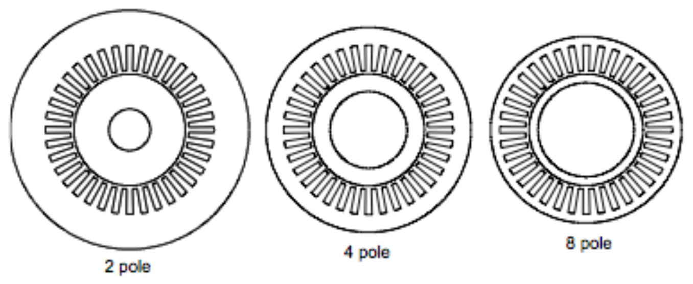
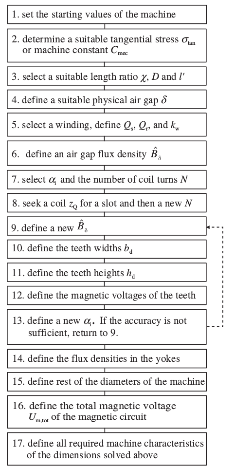

<<!DOCTYPE html>
<html>
  <head>
    <title>EE568-Selected Topics in Electrical Machines</title>
    <meta http-equiv="Content-Type" content="text/html; charset=UTF-8"/>
    <style type="text/css">
      @import url(http://fonts.googleapis.com/css?family=Yanone+Kaffeesatz);
      @import url(http://fonts.googleapis.com/css?family=Droid+Serif:400,700,400italic);
      @import url(http://fonts.googleapis.com/css?family=Ubuntu+Mono:400,700,400italic);

      body { font-family: 'Droid Serif'; }
      h1, h2, h3 {
        font-family: 'Yanone Kaffeesatz';
        font-weight: normal;
      }
      .remark-code, .remark-inline-code { font-family: 'Ubuntu Mono'; }
    </style>
  </head>
  <body>
    <textarea id="source">

class: center, middle

# EE-568 Selected Topics in Electrical Machines


## Machine Design Basics

## Ozan Keysan

[ozan.keysan.me](http://ozan.keysan.me)

Office: C-113 <span class="meta">&#8226;</span> Tel: 210 7586


---
### What do you need to know to design an electric machine?
--

- ### Machine Type and type of construction
--

- ### Rated Power (and power factor)
--

- ### Rated Speed
--

- ### Rated frequency/Number of Phases
--

- ### Duty Cycle
--

- ### Enclosure Class
--

- ### Economics/Efficiency Requirement/Expected Life

---
# Duty Cycle

#### [Duty Cycle Operating Graphs](http://myelectrical.com/Portals/0/Images/PostImages/IEC60034DutyCycle.gif)
--

### S1: Continuous running duty
--


### S2: Short-time duty (e.g. S2 10-90 min)
--


### S3: Intermittent periodic duty (eg. S3 25%)
--


### S4: Intermittent periodic duty with starting
---
# Duty Cycle

### S5: Intermittent periodic duty with Electric Braking
--

### S6: Continuous operation periodic duty
--

### S7: Continous Operation Periodic duty with electric braking
--

### S8: Continuous Operation Periodic Duty with Related Load/Speed Changes
---

# Standards: IEC60034

[More info](http://new.abb.com/docs/librariesprovider53/about-downloads/low-voltage-motor-guide.pdf)
--

## Efficiency Standards ([IEC-60034-30](http://en.wikipedia.org/wiki/IEC_60034))
--

- ### IE1: Standard Efficiency
--

- ### IE2: High Efficiency
--

- ### IE3: Premium Efficiency
--

- ### IE4: Super Premium Efficiency


### [Detailed Info](https://library.e.abb.com/public/0451229996ff4b0786505fd9a4075645/9AKK107319%20EN%2005-2018_20848_ABB_Technical_note_IEC_60034_30_1.pdf)

---

# Standards: Efficiency


#### Since 2015, all the motors between 7.5-375 kW sold in EU has to be IEC3!
#### By 2021, motors between 0.75kW to 7.5kW should be IEC too!
#### By [2023](https://ec.europa.eu/info/energy-climate-change-environment/standards-tools-and-labels/products-labelling-rules-and-requirements/energy-label-and-ecodesign/energy-efficient-products/electric-motors_en), motors between 75-200 kW must meet IE4 level!

---
# Standards: Degrees of Protection
--

## IP 56
--

## First Number (Particle/Person protection)

- ### 2: Motors protected against solid objects greater than 12 mm
--

- ### 4: Motors protected against solid objects greater than 1 mm
--

- ### 5: Dust-protected motors
--

- ### 6: Dust-tight motors

---
# Standards: Degrees of Protection
--

## IP 56
--

## Second Number (Water Ingress Protection)

- ### 3: Motors protected against spraying water
--

- ### 4: Motors protected against splashing water
--

- ### 5: Motors protected against water jets
--

- ### 6: Motors protected against heavy sea

---
# Voltage Standards


- ## 220-240 V (Delta)
--

- ## 380-415 V (Wye)
--

- ## 500 V (Delta)
--

- ## 660-690 V (Wye)


---
# Frame Sizes



[More info](http://www.motology.co.th/download/motors/%282%29%20Standard%20Motor%20catalog.pdf)

---




---
# Design Procedure
--

## Starting Values
--

- #### Motor Type and construction
--

- #### Power, power factor
--

- #### Rotational Speed
--

- #### Rated frequency
--

- #### Rated Voltage
--

- #### Intended  usage (duty cycle)
--

- #### Enclosure Class

---
# Design Procedure:
--

- ## Define the magnetic loading and electric loading
--

- ## Define the Diameter and axial length
--

- ## Define the Airgap
--

- ## Winding Type and number of coils

---
# Design Procedure:

- ## Determination of other dimensions (slot, tooth etc.)
--

- ## Calculation of machine performance
--

- ## Lots of iteration/optimization

---
# Dimensions to Choose?
--

### Diameter (Outer-Airgap)
--

### Airgap clearance
--

### Stator Stack Length
--

### Number of Stator/Rotor Slots
--

### Slot-Teeth Dimensions
--

### Winding Schematic
---

# Where  to start?
---

# Where is the torque generated?
--

### Maxwell Stress Tensor

(textbook pg. 33)

## \\(\sigma_F = \dfrac{1}{2}\mu_0 H^2\\)
or

## \\(\sigma_F = \dfrac{1}{2\mu_0} B^2\\)
---

# Where is the torque generated?

## Which direction does it rotate?
--




---
# Shear Stress

[More info](http://www.eleceng.adelaide.edu.au/research/power/pebn/pebn009%20sizing%20of%20electrical%20machines.pdf)

--
## Average Shear Stress Values
--

- ### Industrial Motor (<1 kW): 0.7 to 2 kPa 
--

- ### Industrial Motor (>1 kW): 4 to 15 kPa
--

- ### High Performance Industrial Servo: 10 to 20 kPa
--

- ### Liquid Cooled Machines: 20 to 100 kPa

---
# Electric- Magnetic Loading

[More info](http://www.eleceng.adelaide.edu.au/research/power/pebn/pebn009%20sizing%20of%20electrical%20machines.pdf)
--

## Specific Magnetic Loading (T)

--

### i.e. average airgap flux density over a pole
--

## \\(\bar{B} = \dfrac{p \Phi_p}{\pi D_i L}\\)
---
# Typical Flux Density Values


---

# Typical Flux Density Values



Source: Traditional Design of Electrical Machines, Slide-12

---
# Specific Electric Loading (kA/m)
--

## RMS ampere turns per unit length of the airgap
--

## \\(\bar{A} = \dfrac{ N\_{turn,slot} I Q}{\pi D\_i}\\)
--

### \\(N\_{turn,slot}\\): Number of turns per slot

### \\(Q\\): Number of slots

### \\(I\\): RMS current for wire

---
# Typical Electric Loading Values


---
# Typical Tangential Stress Values


---
## Electrical & Magnetic Loading vs Stress
--

## Local tangential stress
--

## \\(\sigma\_{tan}(x) = A(x) B(x) \\)

--

## Average Stress

### \\(\sigma\_{tan}(x) = \dfrac{\hat{A} \hat{B} cos (\phi)}{2} \\)
--
\\(= \dfrac{A\_{rms} \hat{B} cos (\phi)}{\sqrt{2}} \\)


#### Details and derivations are available in Design of Rotating Electrical Machines, Juha Pyrhonen.
---

## Torque vs Stress
--

## Torque = \\( \sigma\_{tan} r\_r S\_r\\)
--

## \\(r\_r\\): Rotor Radius (m)

## \\(S\_r\\): Rotor Surface Area (m2)

## \\(S\_r = (2 \pi r\_r l') \\)


---

## Torque vs Stress

##  \\( T = \sigma\_{tan} r\_r (2 \pi r\_r l')\\)
--

##  \\( T = \sigma\_{tan} 2 \pi r\_r^2 l'\\)
--

##  \\( T = 2 \sigma\_{tan} V\_r \\)

##  \\( V\_r = \pi r\_r^2 l' \\) : Rotor Volume

## Torque of a motor is proportional to rotor volume and tangential stress (i.e. electric loading x magnetic loading)

---
# Specific Machine Constant (C)

#### Full derivations available in in Design of Rotating Electrical Machines, Juha Pyrhonen.

--

### \\(S\_i = m E\_m I\_s\\)

### \\(S\_i\\): Apparent Power (kVA)

### \\(m\\): Number of Phases

### \\(E\_m\\): Induced Phase Voltage 

### \\(I\_s\\): Stator Phase Current

---
# Specific Machine Constant (C)

#### Full derivations available in in Design of Rotating Electrical Machines, Juha Pyrhonen.

### \\(S\_i = m \dfrac{1}{\sqrt{2}} \omega N\_s k\_{w1} \hat{\Phi}\_m I\_s\\)
--

### \\(S\_i = m \dfrac{1}{\sqrt{2}} \omega N\_s k\_{w1} \hat{\Phi}\_m \dfrac{A \pi D}{2 m N\_s}\\)
--

### \\(\omega = 2 \pi p n\_{syn}\\)

---
# Specific Machine Constant (C)

--

### \\(S\_i =  \dfrac{1}{\sqrt{2}} 2 \pi p n\_{syn} k\_{w1} \dfrac{\pi D }{2p}\dfrac{2}{\pi} \hat{B} l'\dfrac{A \pi D}{2}\\)
--

### \\(S\_i =  \dfrac{\pi^2}{\sqrt{2}} n\_{syn} k\_{w1} A \hat{B} D^2 l'\\)
--

### \\(S\_i =  C  D^2 l' n\_{syn}\\)

### \\(C =  \dfrac{\pi^2}{2}  k\_{w1} \hat{A} \hat{B} \\)

---
# Specific Machine Constant (C)

### \\(S\_i =  C  D^2 l' n\_{syn}\\)

### \\(D^2 l'\\): Rotor Volume (m3)

### C: Specific Machine Constant

### \\(C =  \dfrac{\pi^2}{2}  k\_{w1} \hat{A} \hat{B} \\)

### A factor to evaluate a machine's performance that combines winding design, electric loading, magnetic loading

---
# \\(C\_{mech}\\)


---
## Exercise (Pyrhonen Ex 6.1)
--

### The diameter of a rotor of a 4 kW, 50 Hz, two-pole induction motor is 98 mm and the length is 82 mm. 
--

### Assume 1% rated slip and calculate the machine constant and the average tangential stress.
--

### \\(P= T \omega \\)
--

### 50 Hz, 2 pole, 0.01 slip
--

### \\(\omega = 2 \pi f (1-s) = 2 \pi (1-0.01) = 99 \pi\\)

---
## Exercise (Pyrhonen Ex 6.1)
 
### \\( T = \dfrac{4 kW}{ 99 \pi} = 12.86\\) Nm
--

### Rotor Area: \\(S_r\\)
--
\\(= \pi D_r l = \pi \, 0.098 \, 0.082 = 0.0252 m²\\)
--

### \\(F\_{tan}=\dfrac{Torque}{Radius} = \dfrac{12.86}{0.049} = 262 N\\)
--


### Stress \\( \sigma = \dfrac{F\_{tan}}{S\_r} = \dfrac{262}{0.0252} = 10.400 N/m² \\)
---
## Machine Constant

### \\(P\_{mech} = C\_{mech} D² l f\_{syn}\\)

### \\(C\_{mech} = \dfrac{4000}{0.098² \, 0.082 50 }\\)
--

### \\(C\_{mech} = 102 \, kWs/m³ \\)

---

# Aspect Ratio
--

## Ratio of axial length to diameter in an electric machine

## \\(\chi = \dfrac{L'}{D}\\)

---

# Aspect Ratio
--



---

# Typical Aspect Ratios
--

### Asynchronous Machines:

### \\(\chi \approx \dfrac{\pi}{2p} \sqrt[3]{p}\\\)

### \\(p\\): pole pairs
--

### Synchronous Machines:

### \\(\chi \approx \dfrac{\pi}{4p} \sqrt{p}\\\)
--


---
# Define \\(D_i\\) and \\(L\\)
--

## Usually \\(0.5 < D_i/L < 2.5\\)
--

## Small diameter for high-speed or servo-type motors, why?
--

### Small inertia,
--

### Low tip speed!
--

### Bending Modes

---

---
# How to define Outer Diameter \\(D_o\\)?
--



---
# How to define \\(D_o\\)?
--

<style type="text/css">
.tg  {border-collapse:collapse;border-spacing:0;border-color:#bbb;margin:0px auto;}
.tg td{font-family:Arial, sans-serif;font-size:32px;padding:10px 5px;border-style:solid;border-width:1px;overflow:hidden;word-break:normal;border-color:#bbb;color:#594F4F;background-color:#E0FFEB;}
.tg th{font-family:Arial, sans-serif;font-size:32px;font-weight:normal;padding:10px 5px;border-style:solid;border-width:1px;overflow:hidden;word-break:normal;border-color:#bbb;color:#493F3F;background-color:#9DE0AD;}
</style>
<table class="tg">
  <tr>
    <th class="tg-031e">N Poles</th>
    <th class="tg-031e">2</th>
    <th class="tg-031e">4</th>
    <th class="tg-031e">6</th>
    <th class="tg-031e">8</th>
    <th class="tg-031e">10</th>
    <th class="tg-szh5">12</th>
  </tr>
  <tr>
    <td class="tg-031e">Do/Di</td>
    <td class="tg-031e">2 <br></td>
    <td class="tg-031e">1.88</td>
    <td class="tg-031e">1.78</td>
    <td class="tg-031e">1.66</td>
    <td class="tg-031e">1.54</td>
    <td class="tg-031e">1.43</td>
  </tr>
</table>


Source: T.Miller - Electric Machine Design Course, Lecture-5, Slide4

---

## Example:
--

### Determine the main dimensions for a 30 kW, 690 V, 50 Hz four-pole, three-phase SCIG.

--

### Choose Cmech = 150 kW s/m3
--

### \\(\chi \approx \dfrac{\pi}{2p} \sqrt[3]{p}\\\)
--

### \\(\chi \approx \dfrac{\pi}{4} \sqrt[3]{2} = 0.9895 \approx 1\\\)

---

### \\(P\_{mech} = C\_{mech} D² l n\_{syn}\\)

### \\( D = \sqrt[3]{\dfrac{P\_{mech}}{\chi C\_{mech} n\_{syn}}} = \sqrt[3]{\dfrac{30}{ 1 \, 150 \, 25}} \approx 200 mm \\)

--
### Tangential Stress if the speed is 1474 rpm
--

### \\(T=\dfrac{30k}{2\pi 1454/60}= 194.4 \\) Nm
--

### \\(\sigma = \dfrac{T}{r \, S\_r} = \dfrac{2 \, 194.4}{\pi 0.2² 0.2} = 15.5 \\) kPa

---
---
# Stator Slot Pitch:
--

- ## Induction Machines and small PMSMs:  7-45 mm
--

- ## Synchronous Machines and large PMSMs:  14-75 mm
--

- ## DC Machines:  10-30 mm
--

### Tooth thickness can be initially assumed as the half of the slot pitch
--

### Slot pitch gets bigger as the power rating of the machine increases

---
## Example:

### Define the rough dimensions, and a select suitable stator windings for the 30 kW, 4-pole induction machine.
--

### D= 200 mm, L= 200 mm, Stator circumference = 628 mm
--

### Assume q= 2, \\(N\_{slot} = 4 x 3 x 2 =24 \\)

### Tooth thickness: \\(\tau\_{teeth} = 0.5 \dfrac{628}{24} =13 \\)mm

---
## Example:

### Define the rough dimensions, and a select suitable stator windings for the 30 kW, 4-pole induction machine.


### D= 200 mm, L= 200 mm, Stator circumference = 628 mm


### Assume q= 3, \\(N\_{slot} = 4 x 3 x 3 =36 \\)

### Tooth thickness: \\(\tau\_{teeth} = 0.5 \dfrac{628}{36} =8 \\)mm

---
## Example:

### Define the rough dimensions, and a select suitable stator windings for the 30 kW, 4-pole induction machine.

### D= 200 mm, L= 200 mm, Stator circumference = 628 mm

### Assume q= 4, \\(N\_{slot} = 4 x 3 x 4 =48 \\)

### Tooth thickness: \\(\tau\_{teeth} = 0.5 \dfrac{628}{48} =6.5 \\)mm

---
## Example:

### Define the rough dimensions, and a select suitable stator windings for the 30 kW, 4-pole induction machine.

### D= 200 mm, L= 200 mm, Stator circumference = 628 mm

### q= 3 seems the best option

### Coil span: 9 slots

### A 8/9 or 7/9 short-pitched winding can be used.


---
# Reading Assignment (Pyrhonen)
--

## Ch-7 Introduction summarizes the first steps in machine design


---
# Where are we? Rough Design Steps
--




---


---
## You can download this presentation from: [keysan.me/ee564](http://keysan.me/ee564)


    </textarea>
    <script src="http://gnab.github.io/remark/downloads/remark-latest.min.js" type="text/javascript"></script>
    <script src="https://cdnjs.cloudflare.com/ajax/libs/mathjax/2.7.1/MathJax.js?config=TeX-AMS_HTML&delayStartupUntil=configured" type="text/javascript"></script>
    <script type="text/javascript">
      var slideshow = remark.create({countIncrementalSlides: false});

      // Setup MathJax
      MathJax.Hub.Config({
          tex2jax: {
          skipTags: ['script', 'noscript', 'style', 'textarea', 'pre']
          }
      });
      MathJax.Hub.Queue(function() {
          $(MathJax.Hub.getAllJax()).map(function(index, elem) {
              return(elem.SourceElement());
          }).parent().addClass('has-jax');
      });

      MathJax.Hub.Configured();
    </script>
  </body>
</html>
